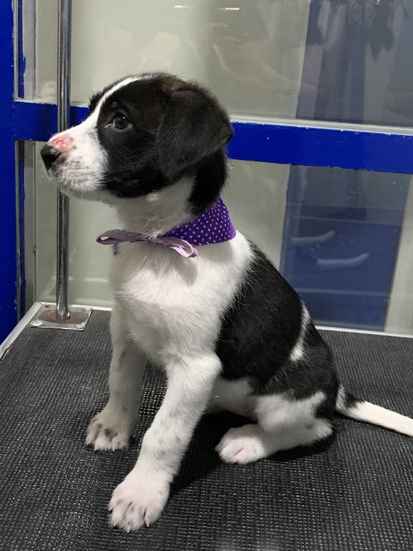
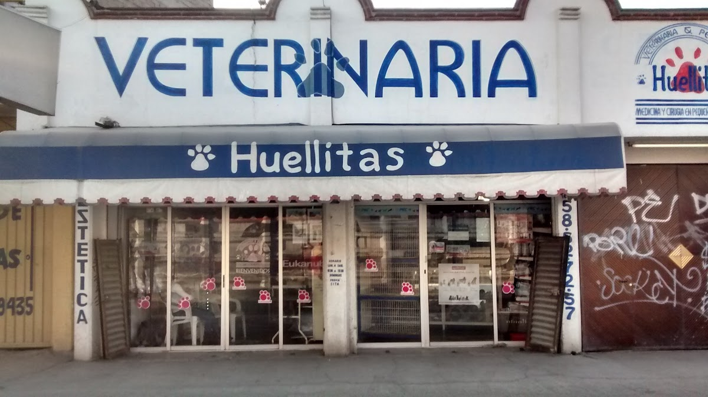

Medicina y cirugía en pequeñas especies y estética canina en Chicoloapan. Médicos que te explican a detalle cada diagnóstico.

Atención integral en un solo lugar, sobre la Carretera México–Texcoco.
Revisión completa, diagnóstico claro y explicación de todas las opciones de tratamiento.
Medicina y cirugía en pequeñas especies con seguimiento cercano a tu mascota.
Baño y corte para que tu perro luzca y se sienta increíble.
Vacunas y desparasitación para mantener a tu mascota protegida.
Productos de calidad para el bienestar diario de tu compañero.
Si un caso requiere otra especialidad, te orientamos hacia el hospital adecuado.

"Llevo a mis perritos y a mi gatita a esta veterinaria desde hace años y no la cambiaría por nada. El trato es siempre amable, profesional y lleno de cariño."
Morgan Ibarra"Los doctores son muy profesionales, tienen amplios conocimientos, explican a detalle y responden todas las dudas. Se esfuerzan por devolver la salud a tus mascotas."
Juan Fernandez"Agradezco el trato que reciben mis perros. Valoro que son profesionales que derivan oportunamente a otros hospitales cuando un caso supera su especialidad."
Mariana Romero